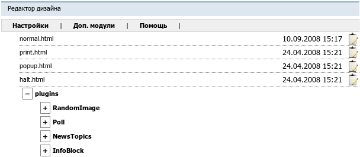

Название
Редактор дизайна — Редактирование онлайн всех html-шаблонов сайта и css-файлов.
О модуле
| Тип | Административный |
| Можно создать копий | Только одну |
| Присутствует по умолчанию | Нет |
| Можно удалять | Да |

Модуль удобен для внесения простых изменений в дизайн сайта. На странице модуля отображаются в виде дерева html-шаблоны всех элементов и модулей сайта, а также css-файлы. Справа от имени файла показаны дата и время последнего изменения файла.
Замечание
Обязательно при создании страницы этого типа выбрать в качестве родительской страницы "Контрольный центр" или в графе "Ограничения видимости" выбрать "Только авторизованные пользователи". Тогда страница будет доступна только авторизованным пользователям. В противном случае, если поместить страницу в основное меню и не задать ограничения видимости, будет нарушена безопасность сайта.
 Редактировать
Редактировать